Sebastian Thrun
Adjunct Professor (formerly tenured) — Stanford University
Home
Research
Students
Papers
FAQ
Contact
Personal
Links
Links
Relevant Conferences & Journals
Artificial Intelligence:
AAAI
,
UAI
,
Machine Learning:
NIPS
,
ICML
ICLR
JMLR
Computer Vision:
CVPR
,
ICCV
,
ECCV
,
Robotics:
RSS
,
ICRA
IROS
Example Robot Applications
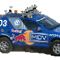
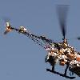
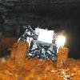
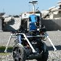
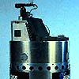
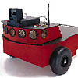
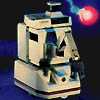
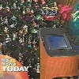
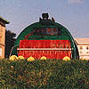
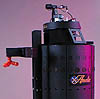
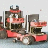
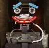
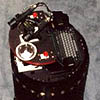
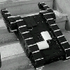
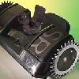
Videos and Animations
Museum Tourguide Robots
minerva.mpg
: Video of Minerva operating in the Smithsonian National Museum of American History
Monte Carlo Localization
sca80a0.avi
: Animation of Monte Carlo Localization using laser range finders
Sampling2.avi
: Animation of Monte Carlo Localization using Ceiling Maps, in the Smithsonian museum
animation.avi
: Animation of Monte Carlo Localization with two robots
Monte Carlo Localization in the Smithsonian museum
MCL and the Kidnapped robot problem
Track video
and
Animation of robot estimate
FastSLAM (all animations by Dirk Haehnel)
FastSLAM in the Bruceton Research Mine, single loop
FastSLAM in indoor environment closing a loop
Raw Data of Intel Research Lab
Scan matcher for Intel Research Lab data
FastSLAM for Intel Research Lab data
FastSLAM in the Bruceton Research Mine, long run with multiple loops
General Mapping
mapping1-new.avi
: Animation: Online mapping with Monte Carlo Localization
Map4b.avi
: Animation: Multi-Robot Exploration with Monte Carlo Localization
maryland-map3-anim.avi
: Animation of 3D map of Wean Hall
Online animation of EM mapping with texture
Result of EM Mapping with texture
threeDimOnlineMapping.gif
: Result of online 3D Mapping with Texture
Exploration
maryland-map3-anim.avi
: Animation: Multi-Robot exploration (DARPA TMR demo in Maryland)
texas-short.mpg
: Movie: Multi-Robot exploration (DARPA TMR demo in Texas)
Nursebot
(see also our
nursebot project page
)
NSF-Nursebot.mpg
: A project overview by the NSF
pearl-assist.mpg
: Movie: Nursebot Peal in Longwood
pearl-interviews.mpg
: Movie: Interviews with Residents at Longwood
dance-new.mpg
: Movie: Dancing Robot Flo
Flo tracking a person's face
Pearl interacting with elder peolpe at reception
Video of Pearl Tracking multiple people
Pearl localization a person while tracking its own location with MCL
Pearl following a person with MCL
Laser Tagging
lasertag-video.avi
: Video sequence of an early expperiment
lasertag-samples.avi
animation of the samples in this experiment
lasertag-video.avi
: Video sequence of experiment with 2 robots
lasertag-samples.avi
animation of the samples for 2 robots
Mine Mapping
(see also our
mine mapping project page
)
mine1-anim2.avi
Animated 3D mine map
mine1-anim-alt.avi
Animated 3D mine map
mine1-video.avi
Video of mine mapping robot (initial experiment using indoor robot)
mine-mapping-live-feed.mpg
: footage of the live video feed
mine-mapping-first.mpg
: footage of the first experiment
Manufacutre of the Groundhog robot
Groundhog video in the Bruceton Research Mine
Groundhog video entering the Burgettstown Mine
Video from Groundhog exploring the Mathies Mine
6D scan matching (courtesy of Fraunhofer Institute)
Crude 3-D model of the Bruceton Research Mine
Decision-Theoretic Navigation
Nursing home: Conventional navigation failure due to uncertainty
Nursing home: Success of coastal navigation
People search, suboptimal due to greedy exploration
People search using the full POMDP solution
Dialog with a person using POMDPs
Helicopter Mapping
Helicopter mapping

{kind=link}